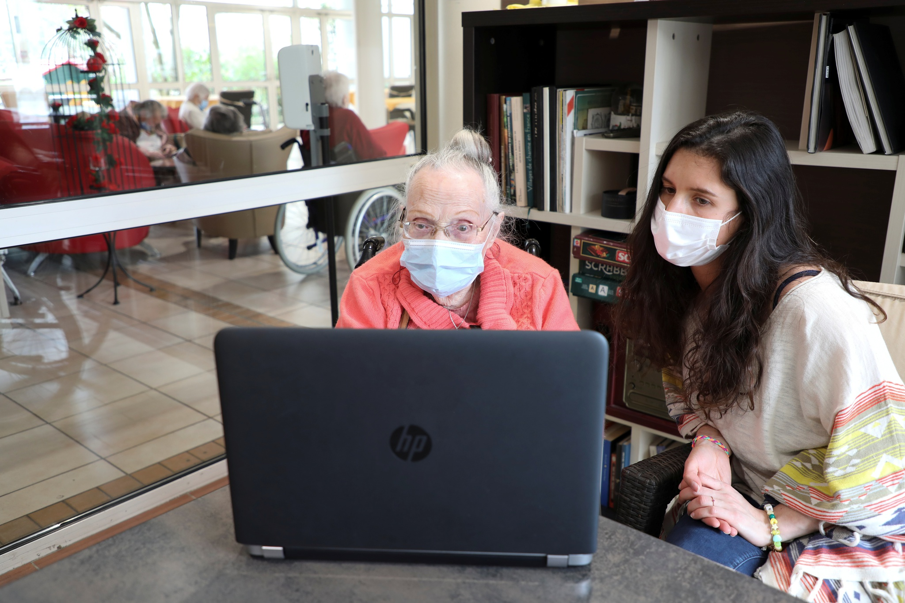

Duas mulheres completamente diferentes construíram uma bela amizade enquanto estavam internadas numa ala de pacientes graves de Covid-19, no Hospital Público Municipal Irmãs do Horto, em Macaé (RJ). Mesmo com tantas dificuldades e separadas pela cortina da enfermaria, elas começaram a se comunicar e a se ajudar. De um lado estava a Yamila Cunha, pensionista, que há 3 anos ficou cega e vivia sozinha e do outro, a Alessandra Nunes Gomes, cozinheira, que apesar de viver com 2 filhas biológicas e 4 filhos adotivos, fez uma promessa para a nova amiga: adotá-la quando ambas recebessem alta.
A vacina desenvolvida pela Pfizer em parceria com a alemã BioNTech contra a Covid-19 foi capaz de neutralizar uma variante do coronavírus que está se espalhando rapidamente pelo Brasil, de acordo com um estudo de laboratório que foi publicado na revista científica New England Journal of Medicine
Uma universidade da Tailândia treinou cães para farejar o coronavírus. O resultado foi uma alta taxa de sucesso nos diagnósticos.
Ele aprende francês, ela tem companhia. O programa "Shareami" juntou um estudante inglês de 20 anos e uma francesa de 98 anos. Tornaram-se amigos e todas as segundas conversam pelo Skype.
Edgard Piccoli conta sobre um projeto criado pelo estudante de engenharia Lemuel Paz para ajudar os agricultores no interior de Pernambuco a desenvolver as plantações. Depois, ele conta também como vizinhos se organizaram pelo WhatsApp, em Brasília, em uma iniciativa para doar alimentos.
Segmento foi um dos mais impactados pela pandemia do coronavírus, mas uso do marketing digital tem amenizado efeitos Mesmo sendo um dos cinco segmentos mais impactados pela pandemia do coronavírus, o número de negócios formalizados no artesanato apresentou crescimento, e o marketing digital tem sido a saída para esse grupo de empreendedores continuar desempenhando seu importante papel para a cultura, turismo e economia brasileira..